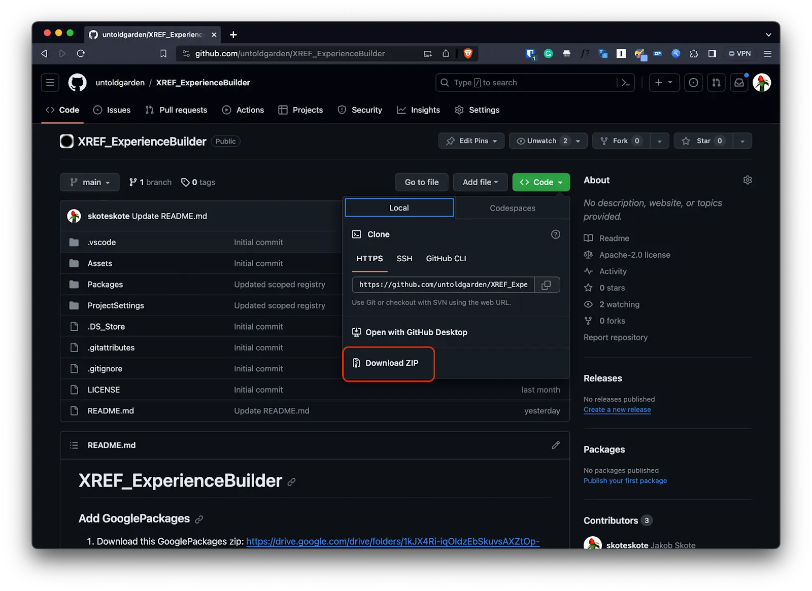
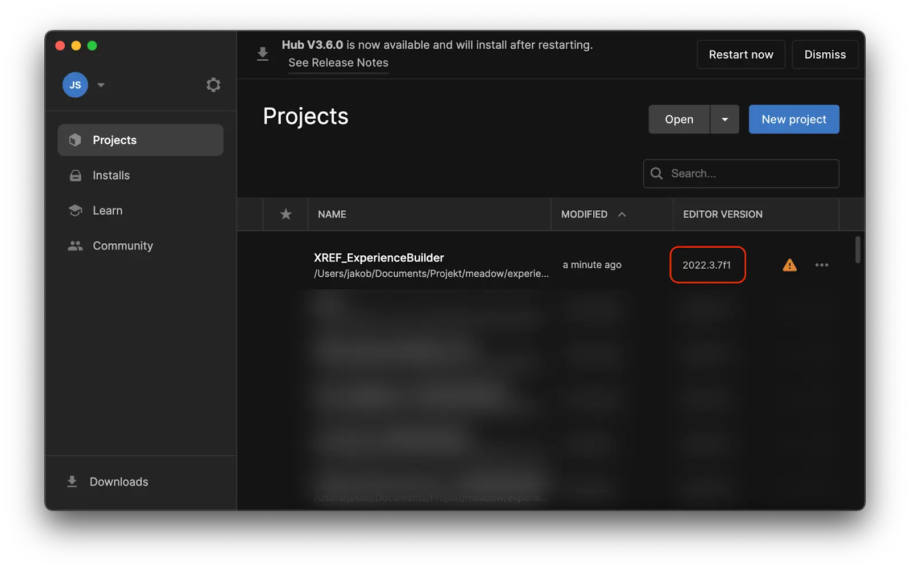

Download and install the template project for Unity
To create and publish your experiences to meadow you need to install two packages in your project.
XREF: XREF stands for Extended Reality Experience Framework, and includes all the basic functionality necessary to create an experience you can upload to our platform.
XREF.ExperienceBuilder: Contains a bunch of useful features that you can use to create your experiences, like simplified audio interaction, dialogue creation, character movements, etc.
To make it easier to get started we have created a template project that has our packages already installed.
Download the template project from Github
Via the Github website:
- Go to https://github.com/untoldgarden/XREF_ExperienceBuilder
- Click the green ‘Code’ button and press download zip 
- Unzip it in a sensible location (e.g. Projects/UnityTutorial)
Via the command line:
- Navigate to where you want to download the project
- Run the following command
git clone https://github.com/untoldgarden/XREF_ExperienceBuilder
Add the template project to Unity Hub
- Go to Unity Hub
- Click projects
- Click on the little arrow to the right of ‘Add’ and choose ‘Add project from disk’

- Navigate to where you located your project template
- Choose the root folder (e.g. XREF_ExperienceBuilder)
- Press ‘Add Project’
- If you installed version 2022.3.11f1 you need to tell Unity that you want to use that version instead
- Press the drop down under ‘Editor version’ that has a little warning triangle on it 
- Select your installed version of Unity
- Press ‘Open with…’
- In the following dialogue, press ‘Change version’
- It will take some time to open the project, and then show a new dialogue, press ‘Continue’.
- The project should open in Unity and look like this: